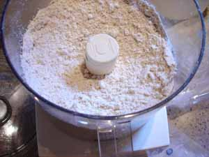
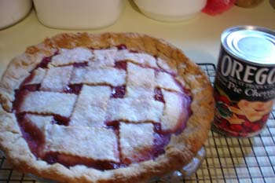

Cooking 101, Mom's Pie Crust
At the request of several readers, or it may have been several requests from one reader ; regardless, I’m going to attempt to transcribe my recipe for pie crust. Please, before any pastry purists get snooty with me, this is not classic pastry; it is also not as good as my mother’s pie crust. My mother still makes the best apple pie in the whole world and her pecan pie isn’t bad, either, not to mention the peach and cherry.
However, I got tired of wrestling with so-called “classic” pastry, having it fall to pieces while transferring it from counter to pie plate and having to pinch it back together again, wondering if I had put enough ice water in it or if I had over-handled it and if it was consequently going to be tough. The recipe I’m giving you has been adapted from several sources and makes a big, 10-inch double crust pie. If you roll it really thinly you can actually get one 9-inch single crust, like for a quiche, out of it, plus an 8 or 9-inch double crust. We like our crust on the thick side. Or you can pinch off a hunk about the size of a newborn baby’s fist and roll the rest out for your 9-inch double crust pie, and roll the fist-sized piece out, sprinkle with cinnamon sugar and bake for a little treat.
First of all, if you have long hair like mine, put it in a pony tail. Even people you are sleeping with don’t like to find your hair in their food. Then wash your hands. Did anyone besides me have to stifle a gag reflex while reading Julie and Julia? The filth in that woman’s kitchen!! I used to work for a caterer who watched us like a hawk when we arrived at work in her basement kitchen to see if we automatically washed our hands. Those who didn’t she judged very harshly, but it is important. This same caterer, who was a good, if not terribly creative cook, didn’t make her own pie crust. She told me one day that she was too angry to make pastry, that her anger caused it to be tough, and she used the kind that came in sticks. The following recipe happens to be very forgiving; you can make it when you’re angry, and you can even put too much water in it, and it still won’t be tough.
Mom’s Pie Crust
- 1 cup self-rising flour
- 1 cup all-purpose flour
- 1 cup whole wheat flour (or use 2 cups all-purpose if you aren’t on a whole grains initiative like I am)
- 1 egg
- 1 tablespoon vinegar (not balsamic!)
- 1 cup, or 2 sticks cold butter (must be real but doesn’t have to be unsalted)
- 3-4 tablespoons cold shortening (I use Crisco)
Put the flours in bowl of the food processor and pulse until well combined. If you don’t have one, mix well in large bowl with wire whisk. Break the egg into a measuring cup and beat with a fork. Add an ice cube to the cup. Add the vinegar to the beaten egg, and then add cold water until the mixture measures about 1/4 cup. Whisk with a fork until blended.

Cut the butter into small pieces and add to the flour. Cut the shortening into smaller pieces and add likewise. Pulse several times until the mixture looks mealy. It’s okay if some of the pieces are still the size of peas; that makes it flakier. If you don’t have a processor, you must use a pastry cutter or 2 knives to cut the fats into the flours and it will be much more tedious. You want to do it fairly quickly so the fats stay cold.
Add about half of the egg mixture to the processor and pulse a couple of times to mix. Rpeat with the remaining liquid. Try not to let the ice cube get into the bowl. Again, do something of the sort without a processor, but just toss with a fork to mix the liquid through. When all the liquid is added, squeeze a bit of the dough in your hand and see if it coheres; it may need a couple more tablespoons of cold water. You will know it is done when it holds together like Play-doh (well, maybe not quite that cohesive, but almost).
Have a plastic bag ready with a couple tablespoons of flour shaken into it. Squeeze and press the dough together as best you can and put it all into the bag. Be careful not to cut yourself on the blade of the processor! I have done that more than once, making pie dough, getting it out of there. When you get all the lumps you can in the bag, squeeze them all together from the outside of the bag, and then flatten the dough out into a thick disk, close the bag, and chill for about an hour before rolling.

I always roll my pie crust between floured wax paper, peeling the top sheet off, flopping it over into the pie plate, and then peeling off the remaining sheet.
Comments
This looks good. I’ll have to try it. I’ve had absolutely no luck in the past with any pie crust… (and I love it that you’re using the food processor, cause I still haven’t got myself a mixer.)
I just made a cheesecake and blackberry pie two days ago, and how I wish I had had this recipe then. I just used a Marie Callander’s crust. I’ll try this out. Thanks!
I have never enjoyed making pie crust and so always use the Pillsbury roll out kind from the dairy case. Your recipe looks fabulous. Now I have something else to use my food processor for other than for making pesto. Thanks!!! You have inspired me to plan an apple and pumpkin pies for next week’s menu. My girls can even help by throwing ingredients into the mixer for me!
I had a good laugh over your line about hair in the food.
I was kind of fascinated by the accounts of kitchen cleanliness in Julie/Julia. In fact, I have a certain admiration for someone who can admit to the world that conditions in her kitchen were so bad that there were maggots. If it were my kitchen I’d be way too embarrassed to share that information. Although I did tell the internet about having mice in my stove…
And speaking of the handwashing thing, do you ever notice that you rarely see anyone on cooking shows doing much hand washing? Or if they do happen to wash their hands after doing something like handling raw chicken they merely splash water over their hands for a moment. That drives me crazy. Wash for a full thirty seconds! Hot water! Soap! Please!
Thanks for pointing me to your recipe. May have to try it sometime, though I know we don’t have any shortening on hand…and I’m glad to see it responds well enough to those like me who get angry instead of upset at torn dough.
As for Julie (Powell, wasn’t it?), I shuddered at the maggot bit, but like Julie above, I have to give her points for freely admitting it to an international audience. At least (again like the above comment), it wasn’t handling raw meat and then playing around with vegetables while on television. Makes me twitch.
I am going to show this post to my mom to convince her to finally transcribe her flour tortilla recipe. it IS possible!
Does the Crisco respond differently than the butter to the mixing process?
The food processor is such a boon for pastry making. Another boon, which I came to late in life, is a slab of marble for rolling out pastry. If you haven’t tried it- you would not believe how much easier it makes the process.
Any smooth slab of marble will do-I bought mine on ebay for a few bucks. I leave it out on the counter all the time-it’s green and nicely veined and pretty-and I only wish I’d gotten a bigger one.
People will tell you to chill it, but you don’t have to-it stays cool. It even makes puff pastry possible for the klutzy (that would be yrs truly.)
If my financial ship ever comes in (unlikely) I am going to have a kitchen with a built in pastry area countertop-or better yet, one of those vintage pastry marble cart thingies.
Thanks for the recipe, Rebecca. I myself have an unorthodox recipe for pate brisee, which I may post one of these days when I have some time…
Yeah, thanks Rebecca! And what a pretty pie. I still haven’t mastered “pretty” pastry. I go for the, er, “rustic” look.
Making pie crust is always so nerve-wracking for me. It’s nice to have a recipe that will help me breathe more easily.
I too, appreciate the hair warning. Not only does my hair make its way into my cooking if I don’t tie it back, a cat hair or two will show up if I don’t wipe down my counters.
You’re welcome, everyone; just remember that pie crust takes a bit of practice so don’t get discouraged if your pie doesn’t come out perfectly the first time. It’s still going to be better than the mixes or rolls or frozen crusts you’ve been using, or at least not have all those additives and artificial ingredients in it.
I know what you mean about the cooking shows on TV, Julie and Rhi. I was watching a locally produced show on NPR and a guest who was interviewing the chef kept sticking her fingers into what he was cooking and slurping at them; not once did the chef say anything about using a tasting spoon and discarding it. It was disgusting! I don’t even do that when I’m cooking for my own family.
Crazy, I would love to see your mother’s tortilla recipe! And it’s not so much that the shortening mixes in differently, as that I like to make sure it’s evenly dispersed throughout the mixture and that’s why I cut it into small pieces before putting it into the processor. I do think the shortening gives the pastry some crispness.
Lindy, you’ve mentioned your marble before and I’ve never tried one. It’s probably one of those kitchen items that once I’ve used it I will say “Why did I wait so long?!” like with my micro-plane.
Yulinka, I know how busy you are now that you’re in school, but I’d love the recipe when you get a chance!
Don’t worry, Anne – I used this photo to illustrate the post, but it’s actually the one and only time I made a pie with a lattice crust. My pies are usually of the “rustic” variety also, and I actually prefer pies that look like that; more home made-looking.
And actually, the more rustic looking ones often do taste better-because they are not over-worked. They fall apart more easily because they are more tender and flaky. Nothing looks more perfect, and tastes more cardboardy than the crust on a supermarket pie.
This is a beautifully crafted post, my dear. It makes me realize that you are a fine technical writer, something I had never appreciated before. You could be writing software manuals and making lots of money if anyone still used them.
You have a wonderfull blog. I have been copying some of your recipes ( if you don´t mind) and look foward to cook them. Forgive my english, it´s not very good. Kisses from Spain.
Pilar
Add a comment